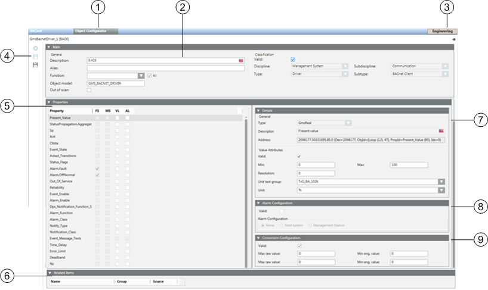

Object Configurator Workspace
The Object Configurator tab permits specific modifications to an object instance.

| Section | Description |
1 | Object Configurator | Tab to switch to Object Configurator to process project instances. |
2 | Main expander | Basic settings for the corresponding Object Model. |
3 | Operating mode | Toggle button to switch between Operating and Engineering mode. |
4 | Toolbar | Toolbar for Object Models, Functions, and Object Configurator. |
5 | Properties expander | Displays all properties for the corresponding object. |
6 | Related Items | Displays where the object is used. |
7 | Details expander | Displays detailed configuration of value attributes, as well as status. |
8 | Alarm Configuration expander | Alarm configuration of individual object properties. |
9 | Conversion Configuration expander | Data point conversion of row value and supports the data point types Real, Uint and Int. The behavior is linear and for input or output the same. |